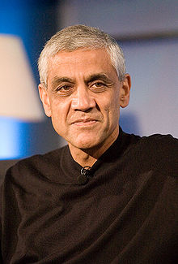

In 1980, after post-graduating from Stanford University, Khosla worked for
electronic design automation company Daisy Systems.
In 1982, Khosla co-founded Sun Microsystems (SUN is the acronym for the Stanford
University Network), along with Stanford classmates Scott McNealy, Andy
Bechtolsheim, and UC Berkeley computer science graduate student Bill Joy. Khosla
served as the first chairman and CEO of Sun Microsystems from 1982 to 1984, when
he left the company to become a venture capitalist.
In 1987, Khosla joined the venture capital firm Kleiner Perkins Caufield & Byers
as a general partner. At Kleiner, Khosla became a recognized venture capitalist,
with several successful early stage investments. Khosla also played a key role
with several of the tech industry's most spectacular failures, including Asera,
Dynabook, BroadBand Office, Excite@Home, and many others.
He also invested in an Indian microfinance company, SKS Microfinance, which
lends small loans to poor women in rural India. Khosla is also one of the
founders of TiE, The Indus Entrepreneurs, and has guest-edited a special issue
of The Economic Times (ET), a leading business newspaper in India.
Khosla was featured on Dateline NBC in May 2006, where he discussed the
practicality of ethanol as a gasoline substitute to have invested heavily in
ethanol companies, in hopes of widespread adoption.
Khosla was a major proponent of the "Yes on 87" campaign to pass California's
Proposition 87, The Clean Energy Initiative, which failed to pass in November
2006.
In 2006, Khosla's wife Neeru co-founded the CK-12 Foundation, which aims to
develop open source textbooks and lower the cost of education in America and the
rest of the world. Khosla and his wife are also donors to the Wikimedia
Foundation, in the amount of $600,000.
Khosla formed his own venture capital firm, Khosla Ventures in 2004. The firm is
based in Menlo Park, California, and manages approximately $1 billion of
investor capital as well as investments funded by Khosla himself.
In September 2009, Khosla completed fundraising for two new funds, to invest in
cleantech and information technology start-ups. Khosla Ventures III secured $750
million of investor commitments to invest in traditional early stage and growth
stage companies. Khosla also raised $250 million for Khosla Seed, which will
invest in higher-risk opportunities.
In May 2010, it was announced that former British Prime Minister Tony Blair was
to join Khosla Ventures to provide strategic advice regarding investments in
technologies focused on the environment. Khosla Ventures also invested in
HackerRank.